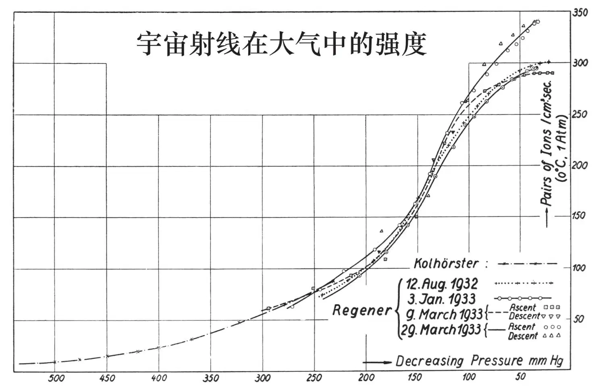
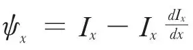
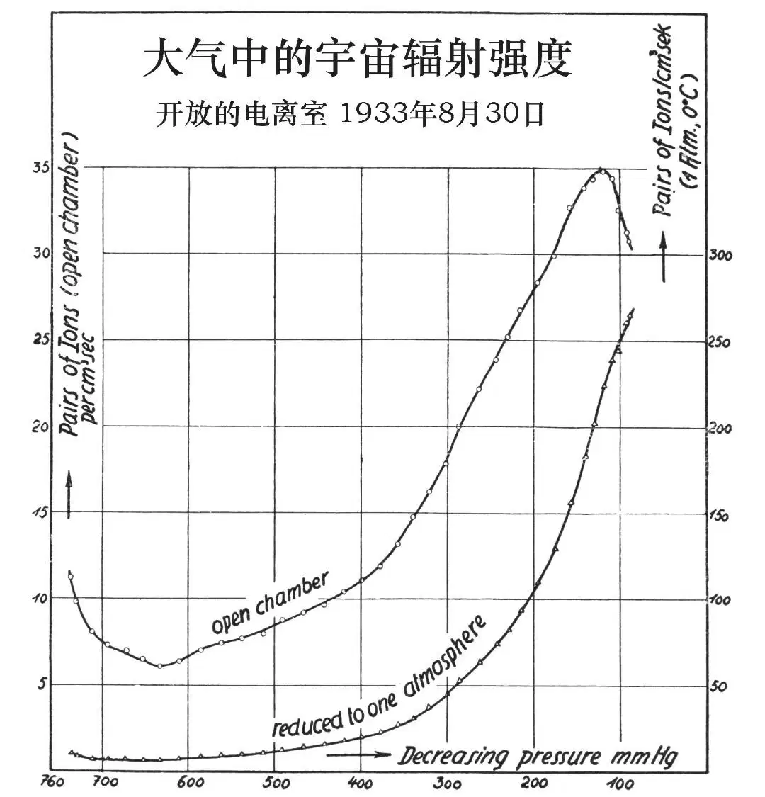

英文
英文埃里克·雷格纳
编者按
埃里克·雷格纳详细地报告了他在研究高层大气中宇宙射线的电离作用时得到的观察结果。他和他的同事利用气球载静电计在气压低于50毫米汞柱的高海拔区做了多次实验。他们的装置在前三次实验中给出了一致的结果；但第四次的实验结果与前三次有偏离，不过雷格纳指出其他研究人员在第四次实验的那天观测到了磁暴，这也许是导致实验结果出现偏离的原因。所有这些数据都说明了宇宙辐射是由三种穿透力明显不同的成分组成的。 英文
在最近几年里，我一直致力于探索宇宙辐射进入地球大气层后在尽可能广的范围内的强度衰减。我确信这项研究在我们提出一个有关宇宙辐射性质的理论之前是必不可少的。我已经在《自然》[1]杂志和《物理杂志》[2]上对我们测量高层大气中宇宙辐射强度的方法作了初步的说明。在这里我想给出一些更进一步的结论，是我们最近用探空气球的上升实验得到的，但首先我必须描述一下我们对这些仪器所做的改进。 英文
探空气球静电计包括一个静电计系统（一根细的沃拉斯顿铂丝，一个提供下坠动力的石英吊坠）和一个将静电计的铂丝投影到摄影底片上的照相物镜。来自边缘的光每隔4分钟把铂丝照亮一次，所以铂丝在摄影底片的暗背景中出现一条亮线。还有一个用于测量气压的无液气压计和一个用于测量温度的双金属片。当压力下降时，无液气压计的运动通过一个指针来限制静电计的铂丝在摄影底片上的图像。因为气压测量是最精细的部分，尤其是当压力很低时，因此除这个普通的无液气压计外我们又添加了第二个无液气压计，新添的气压计只有在气压低于100毫米汞柱时才开始有显示。通过在3～4千米高的基地上用2个经纬仪观察空中的气球，我们已经能够验证用这两个气球上的无液气压计测量出来的压力是非常精确的，从压力测量中推导出来的高度与实际高度非常吻合。 英文
我们也使用过另一种形式的气球静电计。至今为止，我们使用的每一只气球静电计都配有电离室，室内充有3或4到5个大气压的空气。而新的静电计有一个开放的电离室，也就是说，电离室是通过一根装有五氧化二磷的管子同外部大气相通的。因此，当气球在自由大气中上升时，电离室内的气压也会随着下降，而且此时的电离室必须做得更大一些，以获得足够的灵敏度。开放电离室的设计非常便于测量由辐射产生的电离的绝对值，因为在低压下更容易达到电流的饱和。大家都知道在充有高压气体的普通电离室中，电流很难达到饱和。 英文
图1中显示的是我们用密闭气球静电计测量宇宙辐射的四次最佳实验结果。在这四次升空过程中达到的气压的最小值分别为：
1932年8月12日，22毫米汞柱，电离室内为5.4个大气压。
1933年1月3日，34毫米汞柱，室内4.45个大气压。
1933年3月9日，17.6毫米汞柱（这是迄今为止达到的最低气压值），室内3.28个大气压。
1933年3月29日，32毫米汞柱，5.33个大气压。 英文

图1 英文
值得注意的是，前3次升空的结果相互之间很一致，第4次升空在气压为150毫米汞柱左右的中高度区（即在高度约为12千米时）所得的结果与前3次也很一致。但是到了上层大气中，即在气压低于100毫米汞柱，高度大于15千米甚至达到20千米时，其强度开始超过其他三次实验，最大值比其他几次实验高出近15%。这很可能不是由测量的不准确造成的。我们可以看到，第四个曲线的中部同其他曲线的中部非常吻合。而且，在1933年3月29日进行的第四次实验中我们采用了密闭的气压计，效果应该是最好的。在气球下降过程中，我们也可以记录观测数据（见图1）。这些观测结果表明，普通无液气压计和第二个无液气压计的工作状态都非常好。 英文
当气球在平流层飞行时，温度变化相对比较小——从6.5℃到11℃。那是因为“玻璃房”效应，静电计的周围被像温室的玻璃一样包裹着，使它能够抵御平流层的寒冷。 英文
我们相信，第四次实验得到的曲线与前三次结果之间的差别是真实的，而且我们曾试过做出解释。我们在四次实验所处的环境中寻找原因。在第四次实验时，出现了一轮新月，我们认为，月面的放射性或许是造成那天强度更大的原因，因为在其他几次实验中，天上没有出现月亮。顺便说一下，我们应该知道，当气压低到20或30毫米汞柱时，一般的放射性物体发射的γ射线就已经有三分之一能够透过大气了。但在经过了简单的计算之后，我们发现月亮的辐射不可能造成这么大的影响，所以这个解释是不正确的。接着，我们又查询了这四天里磁场扰动的情况。德国波茨坦的尼波德教授和瑞典北部的科林博士告诉我，在3月29日出现过一次中等强度的磁扰，而在另外三天内没有发生磁扰。如果在大气层顶部的磁场强度和宇宙射线强度之间存在着关联，而且这种关联只发生在大气层顶部，这一现象是非常值得关注的；这意味着，那里还有其他射线（软射线）存在，它们也许来自于太阳黑子。但是因为这样的现象我们至今只观察到过一次，要证实这种关联是否存在有必要进行进一步的观测。 英文
根据在康斯坦次湖进行的宇宙辐射强度衰变的测量结果，我的同事克雷默[3]博士曾经作出推断，即宇宙辐射是由多种成分组成的。 英文
根据詹姆斯·金斯爵士的假设，我们能够计算出宇宙射线中最硬的两种成分与氦原子和质子的湮灭有关，但在计算过程中用到了许多假设。我们在整个大气层中得到的电离曲线证明，电离曲线在大气层顶部时会达到最大值；对于这一事实不支持初级宇宙射线为电磁辐射的假设，常常遭到众人的置疑。来自外太空的电磁辐射在进入地球大气层后会产生次级辐射，我们会在较低的大气层中，比如20千米处，发现射线强度达到最大值，而后在逐渐接近大气层顶部的过程中强度会有所下降。 英文
然而，我们很容易证明，通过实验得到的电离曲线与宇宙射线是电磁辐射的假设并不矛盾。射线来自于各个方向的事实改变了观测到的曲线。来自于侧面的射线，也就是那些在穿越了很长距离之后次级辐射已经达到饱和的射线，是非常重要的。我的同事格罗斯[4]先生曾经指出，根据观察到的来自各个方向的辐射曲线可以计算出与单一方向对应的辐射曲线。假设来自各个方向的射线的函数是Ix，只来自于一个方向的射线强度函数是ψx，则

。我们从垂直射入大气层的辐射曲线中可以看到，它们的强度在到达大气层顶部时会下降。因此，这与至少有一部分射线是电磁辐射的观点相符。射线中软射线部分的次级成分还会产生第二个极大值。 英文
对于分析射线的各种成分，我还想再多说几句。我的同事伦兹博士[5]已经找到了一种区分射线到底是单组分还是多组分的方法，该方法独立于任何有关宇宙射线性质的假说。假定强度是对单色辐射进行吸收的单调函数，则用强度I乘以吸收层的厚度d得到的曲线会在厚度d为某一特定值时达到一个最大值。如果射线包含两个穿透力不同的成分，则在原始曲线的强度值上乘以吸收层的厚度之后，曲线上就会出现两个最大值（让我们把这条曲线称作变形后的曲线）。当我们把自己的实验结果用这种方式处理时，从得到的曲线上可以看出，大气中的辐射包含两个或三个穿透力不同的成分。 英文
我们也可以用实验方法来确认对辐射成分的分解是否是正确的。当我们用一个开放的电离室测量自由大气中的射线强度时，我们还用刚刚用过的数学方法来处理。普通的辐射强度曲线是用包含一个大气压空气的电离室得到的。当我们用一个开放电离室做试验时，我们会发现电离室中的电流值小于在同样比例的空气压力下——同时也是电离室中的压力下的电流值，也小于常压下的电流值。这样我们就直接得到了一个变形的电离曲线，因为压力与射线透过的物质层的质量成正比。 英文
我们用这样的电离室做了两次实验，结果都不十分令人满意。第一次实验使用的电离室太小（体积仅为22升），因而灵敏度不够高；第二次实验所用的电离室体积为105升，这样灵敏度就足够高了。8月30日得到的照相纪录给出了很好的结果，但不幸的是，这个装置的温度降到了–20℃以下，因而所需的校正值略大于正常值。对于我们的气球来说，这个装置已经很重了（3.7千克），所以我们没有安装抵御冷气的防护设施。但根据测量结果绘制的曲线（图2）仍然会好于密闭电离室得到的结果，并且与用上述方法计算出来的变形曲线吻合得很好。在变形的曲线中也可以看到第二个最大值，但是，这个最大值并不是很明显，我们将设法确保更有利的实验条件，尽可能地避免各种修正。我认为曲线的这个部分对于我们分析和解释这条曲线至关重要。 英文

图2. 英文
一般而言，如果我们想得到一条从海平面到大气层顶部的完整曲线，用开放电离室进行测量是很方便的，因为开放电离室的观测值只在1到5之间变化，而封闭电离室的测量值则会从1一直变化到150。因此，在图2中，开放电离室的标准强度曲线在较低部分会比密闭电离室的更精确，密闭电离室标准曲线上的值是由开放电离室的值乘以p0/p得到的。 英文
我要感谢奥尔先生在测量中给我的帮助，以及“德国科学临时学会”对这项研究工作的支持。 英文
（刘霞 翻译；马宇蒨 审稿）
* 这篇论文曾在英国科学促进会A分会（数学和物理学分会）于9月8日在莱斯特举行的会议上被宣读过。